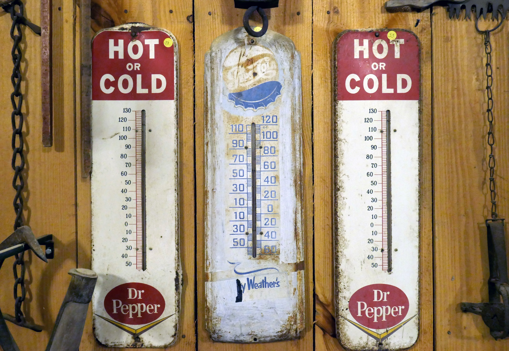

Overview of Regression 📖
MATH 4780 / MSSC 5780 Regression Analysis
Relationship as Functions
- Represent relationships between variables using functions \(y = f(x)\).
- Plug in the inputs and receive the output.
- \(y = f(x) = 3x + 7\) is a function with input \(x\) and output \(y\).
- If \(x = 5\), \(y = 3 \times 5 + 7 = 22\).

Different Relationships



Relationship between Variables is Not Perfect
💵 In general, one with more years of education earns more.
💵 Any two with the same years of education may have different annual income.

Variation around the Function/Model
What are the unexplained variation coming from?
- Other factors accounting for parts of variability of income.
- Adding more explanatory variables to a model can reduce the variation size around the model.
- Pure measurement error.
- Just that randomness plays a big role. 🤔

What other factors (variables) may affect a person’s income?
your income = f(years of education, major, GPA, college, parent's income, ...)

True Unknown Function \(f\) of the Model \(Y = f(X) + \epsilon\)
- Blue curve: true underlying relationship between (the mean)
incomeandyears of education. - Black lines: error associated with each observation


Big problem: \(f(x)\) is unknown and needs to be estimated.
Why Estimate \(f\)? Prediction for \(Y\)
- Prediction: Inputs \(X\) are available, but the output \(Y\) cannot be easily obtained. We predict \(Y\) using \[ \hat{Y} = \hat{f}(X), \] where \(\hat{f}\) is our estimate of \(f\), and \(\hat{Y}\) represents the resulting prediction for \(Y\).
In Intro Stats, what is our estimated regression function \(\hat{f}\)?
- \(\hat{Y} = \hat{\beta}_0 + \hat{\beta}_1X\).
- \(\hat{f}\) is often treated as a black box.

Parametric vs. Nonparametric Models
Parametric (Linear regression)

Nonparametric (LOESS)

Parametric vs. Nonparametric Models
- Parametric: Assumptions on \(f\) with unknown parameters.
- Nonparametric: No assumptions on \(f\) (may have no closed form).

Linear vs. Nonlinear Models